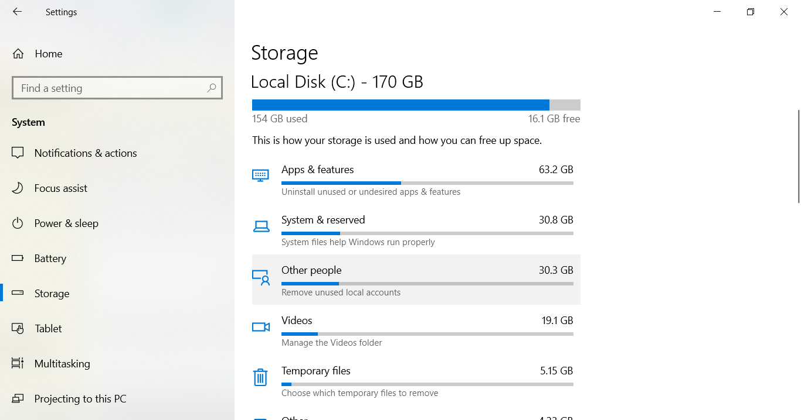
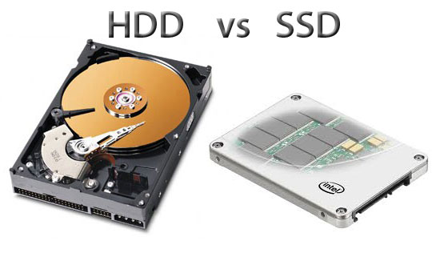
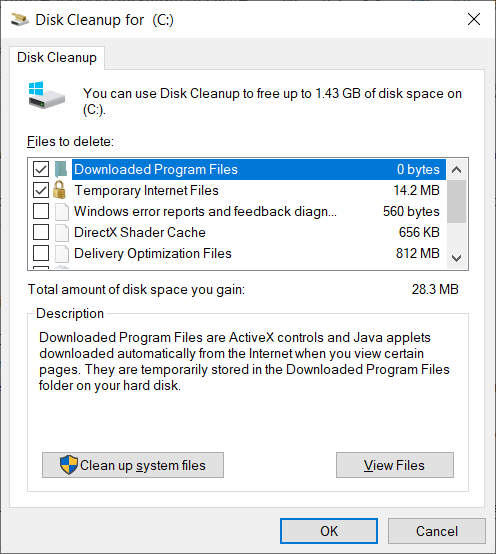
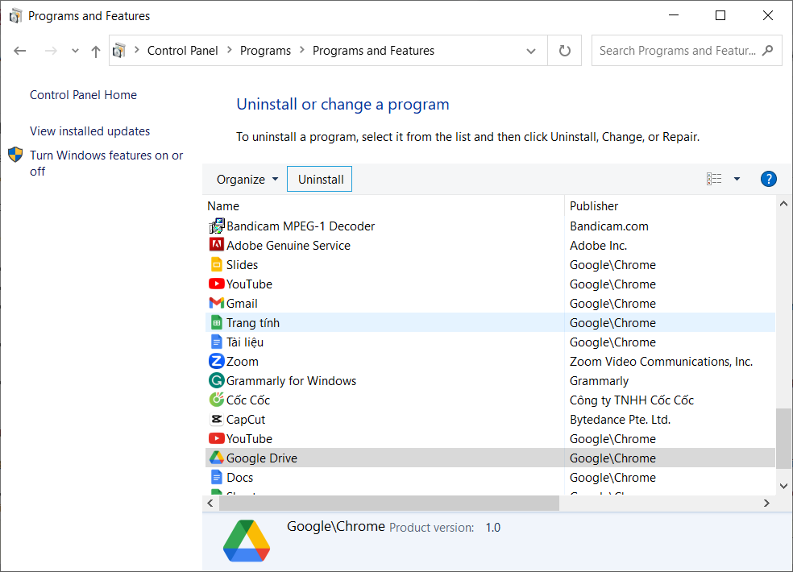
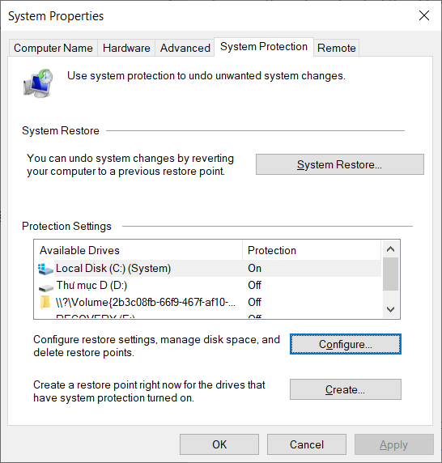
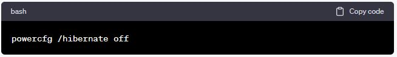

Cách dọn dẹp ổ C bị đầy: Giải pháp cho vấn đề dung lượng máy tính thấp
Ổ đĩa C (hoặc ổ C:) là phân vùng chứa hệ thống chính của máy tính Windows, và việc nó bị đầy có thể gây ra nhiều vấn đề, bao gồm hiệu suất kém và khả năng lưu trữ hạn chế. Trong bài viết này, chúng ta sẽ tìm hiểu về các cách hiệu quả để dọn dẹp ổ C và giải quyết vấn đề dung lượng máy tính thấp.
1. Xác Định Tình Trạng Ổ Đĩa C
Trước khi bạn bắt đầu quá trình khắc phục ổ đĩa C bị đầy, điều quan trọng là xác định tình trạng thực sự của nó. Điều này giúp bạn biết được mức độ đầy của ổ đĩa và mức dung lượng còn lại. Dưới đây là cách bạn có thể thực hiện điều này:
- Sử Dụng File Explorer: Mở File Explorer bằng cách nhấn nút "Start" và chọn "File Explorer" hoặc bấm tổ hợp phím Windows + E.
- Xem Thông Tin Ổ Đĩa C: Trong File Explorer, chọn "This PC" hoặc "My Computer" từ thanh bên trái. Sau đó, bạn sẽ thấy danh sách các ổ đĩa, trong đó ổ đĩa C thường được ghi là "Local Disk (C:)."
- Kiểm Tra Dung Lượng Còn Trống: Khi bạn đã xác định ổ đĩa C, nhấp chuột phải vào nó và chọn "Properties" (Thuộc tính). Trong cửa sổ thuộc tính, bạn sẽ thấy một biểu đồ hiển thị mức độ đầy của ổ đĩa C và mức dung lượng còn lại.

Để kiểm tra chi tiết dung lượng các file trong ổ C nhanh chóng, bạn có thể nhấn tổ hợp phím Windows + I > Setting > Chọn mục System > Storage. Nếu bạn muốn kiểm tra phần nào thì bạn chỉ việc chọn vào phần đó, chúng sẽ hiển thị ra một cách chi tiết dung lượng của từng file cho bạn.

Nếu không gian còn trống rất ít hoặc đã hết, bạn cần thực hiện các bước tiếp theo để giải quyết vấn đề.
2. Hậu Quả của Ổ Đĩa C Bị Đầy
Khi ổ đĩa C bị đầy, không chỉ gây phiền toái mà còn mang theo nhiều hậu quả tiêu cực mà bạn cần quan tâm:
-
Hiệu Suất Kém
Ổ đĩa C đầy gây ra hiệu suất kém của máy tính. Điều này là do hệ thống không còn đủ không gian để làm việc một cách hiệu quả. Các tập tin tạm thời và cache không thể được tạo hoặc xóa một cách hiệu quả, ảnh hưởng đến tốc độ hoạt động của máy tính. Khi bạn mở ứng dụng hoặc tập tin, chúng có thể phản hồi chậm hơn và máy tính có thể đáp ứng chậm chạp.
-
Khả Năng Lưu Trữ Hạn Chế
Ổ đĩa C bị đầy sẽ giới hạn khả năng lưu trữ của bạn. Bạn sẽ không thể tải xuống nhiều tập tin mới hoặc cài đặt thêm ứng dụng. Điều này đặc biệt quan trọng nếu bạn đang làm việc với các tập tin lớn như video, hình ảnh hoặc tệp dự án. Nếu bạn cố gắng sao lưu dữ liệu hoặc tạo tập tin mới, bạn có thể gặp thông báo lỗi về không gian không đủ.
-
Không Thể Cập Nhật Hệ Thống
Ổ đĩa C đầy cũng có thể ngăn bạn cài đặt các bản cập nhật hệ thống quan trọng. Hệ điều hành thường cần cài đặt các bản cập nhật để bảo đảm tính bảo mật và sửa lỗi. Khi không gian trên ổ đĩa C quá hạn chế, bạn có thể không thể cài đặt các bản cập nhật này, đặt máy tính của bạn vào rủi ro về vấn đề bảo mật và ổn định.
-
Rủi Ro Mất Dữ Liệu
Một trong những hậu quả nghiêm trọng nhất của ổ đĩa C đầy là rủi ro mất dữ liệu. Khi ổ đĩa không còn không gian để lưu trữ dữ liệu mới, các tập tin quan trọng có thể bị ghi đè hoặc hỏng. Điều này có thể dẫn đến việc mất dữ liệu quan trọng mà bạn không thể khôi phục được. Để tránh rủi ro này, luôn luôn đảm bảo có sao lưu dữ liệu quan trọng và thường xuyên giải phóng không gian trên ổ đĩa C.
3. Các Nguyên Nhân Khiến Ổ Đĩa C Bị Đầy
Khi đã biết tình trạng của ổ đĩa C, bạn cần tìm hiểu về các nguyên nhân chính khiến nó bị đầy. Hiểu rõ nguyên nhân sẽ giúp bạn đưa ra quyết định thông minh về cách giải quyết vấn đề. Dưới đây là một số nguyên nhân phổ biến:
-
Tập Tin Tạm Thời và Bộ Nhớ Đệm
Một trong những nguyên nhân chính khiến ổ đĩa C bị đầy là việc tích luỹ quá nhiều tập tin tạm thời và bộ nhớ đệm không cần thiết. Những tập tin này được tạo ra trong quá trình sử dụng máy tính để cải thiện hiệu suất và tạo dự phòng dữ liệu. Tuy nhiên, chúng có xu hướng tích luỹ và chiếm không gian quý báu trên ổ đĩa C.
-
Tải Về Quá Nhiều Dữ Liệu
Tải xuống các tập tin, video, và ứng dụng lớn có thể nhanh chóng đổ đầy ổ đĩa C. Thư mục "Downloads" trên máy tính thường chứa các tập tin tải về, và nếu bạn không quản lý chúng, chúng có thể tích luỹ và làm đầy ổ đĩa.
-
Cài Đặt Ứng Dụng Mặc Định
Một số ứng dụng cài đặt mặc định trên ổ đĩa C, gây tăng kích thước của hệ thống. Điều này có thể dẫn đến việc ổ đĩa C đầy nhanh chóng. Để giảm tải cho ổ đĩa C, bạn có thể xem xét di chuyển các ứng dụng này sang ổ đĩa khác nếu có khả năng. Tuy nhiên, việc này phải thực hiện cẩn thận và cân nhắc kỹ lưỡng, vì không phải ứng dụng nào cũng có thể di chuyển một cách dễ dàng mà không gây lỗi hệ thống.
-
Lưu Trữ Email và Tệp Đính Kèm
Email và tệp đính kèm trong hộp thư có thể chiếm không gian lưu trữ đáng kể trên ổ đĩa C. Nếu bạn sử dụng một ứng dụng email địa phương như Microsoft Outlook để quản lý email, tất cả tệp đính kèm có thể được lưu trữ trên ổ đĩa C.
Hiểu rõ các nguyên nhân khiến ổ đĩa C bị đầy là bước quan trọng để đưa ra các biện pháp khắc phục hiệu quả. Sau khi bạn đã xác định nguyên nhân cụ thể, bạn có thể tiến hành các biện pháp khắc phục thích hợp để giải phóng không gian trên ổ đĩa C.
3. Cách Giải Quyết Ổ Đĩa C Bị Đầy
a. Xóa Tập Tin và Thư Mục Không Cần Thiết
Loại bỏ các tập tin và thư mục không cần thiết hoặc đã lỗi thời là một cách hiệu quả để giải phóng không gian trên ổ đĩa C. Dưới đây là hướng dẫn chi tiết:
- Xác định tập tin và thư mục không cần thiết: Trước tiên, hãy xem xét nội dung của ổ đĩa C để xác định các tập tin và thư mục không còn cần thiết. Điều này có thể bao gồm tài liệu cũ, tập tin tải về không còn sử dụng, hoặc các ứng dụng không còn dùng đến.
- Sao lưu dữ liệu quan trọng: Trước khi xóa bất kỳ tập tin nào, đảm bảo bạn đã sao lưu dữ liệu quan trọng ra ngoài hoặc lưu trữ chúng ở một vị trí an toàn. Điều này đảm bảo bạn không mất dữ liệu quan trọng.
- Xóa các tập tin không cần thiết: Khi bạn đã xác định các tập tin và thư mục không cần thiết, bạn có thể xóa chúng bằng cách thực hiện các bước sau: Kéo và thả tập tin vào thùng rác hoặc nhấn phải và chọn "Xóa." Để xóa thư mục, bạn cũng có thể nhấn phải lên thư mục và chọn "Xóa."
- Kiểm tra thùng rác: Sau khi xóa tập tin và thư mục không cần thiết, hãy kiểm tra thùng rác của bạn và xác nhận xem bạn muốn xóa chúng vĩnh viễn hay không. Điều này giúp giải phóng thêm không gian.
b. Nâng Cấp Lên Ổ Đĩa Lớn Hơn

Nếu ổ đĩa C của bạn quá đầy và không thể giải phóng đủ dung lượng bằng cách loại bỏ tập tin, cân nhắc nâng cấp lên ổ đĩa lớn hơn là một giải pháp hợp lý. Dưới đây là hướng dẫn:
- Chuẩn bị ổ đĩa mới: Trước tiên, bạn cần chuẩn bị một ổ đĩa lớn hơn để thay thế ổ đĩa C hiện tại. Điều này có thể là ổ đĩa SSD hoặc HDD.
- Sao lưu dữ liệu: Chắc chắn sao lưu toàn bộ dữ liệu từ ổ đĩa C cũ ra ngoài hoặc ổ đĩa khác. Bạn có thể sử dụng ổ đĩa ngoài hoặc các dịch vụ sao lưu trực tuyến.
- Thay ổ đĩa C: Mở máy tính và thay thế ổ đĩa C hiện tại bằng ổ đĩa mới lớn hơn. Điều này có thể đòi hỏi kiến thức kỹ thuật hoặc bạn có thể nhờ một chuyên gia thực hiện.
- Khôi phục dữ liệu: Sau khi thay ổ đĩa, bạn cần khôi phục dữ liệu từ bản sao lưu vào ổ đĩa mới. Điều này có thể thực hiện bằng cách sử dụng phần mềm sao lưu hoặc dịch vụ sao lưu trực tuyến. Hãy đảm bảo rằng tất cả dữ liệu cần thiết đã được khôi phục và kiểm tra kỹ trước khi tiếp tục sử dụng máy tính.
c. Sử Dụng Công Cụ Dọn Dẹp
Công cụ dọn dẹp ổ đĩa có sẵn trong Windows giúp bạn loại bỏ các tập tin tạm thời và rác một cách tự động.

- Mở công cụ Dọn Dẹp Ổ Đĩa: Bấm nút Start (hình logo cửa sổ Windows) trên bàn phím máy tính, gõ "Disk Cleanup" vào hộp tìm kiếm của Windows và mở ứng dụng "Disk Cleanup."
- Chọn Ổ Đĩa C: Trong cửa sổ "Disk Cleanup," chọn ổ đĩa C và nhấn "OK."
- Chọn các mục để dọn dẹp: Công cụ sẽ hiển thị danh sách các loại tập tin bạn có thể dọn dẹp. Chọn các mục bạn muốn loại bỏ, ví dụ: "Temporary files" (tập tin tạm thời) và "Recycle Bin" (thùng rác).
- Bắt đầu quá trình dọn dẹp: Nhấn "OK" để bắt đầu quá trình dọn dẹp. Công cụ sẽ xóa các tập tin và thư mục không cần thiết, giải phóng không gian.
d. Chuyển Dữ Liệu Sang Ổ Đĩa Khác
Nếu bạn có một ổ đĩa ngoài hoặc ổ đĩa phụ, bạn có thể chuyển các tập tin hoặc thư mục không quan trọng từ ổ đĩa C sang ổ đĩa khác để giảm áp lực lên ổ đĩa C.
- Kết nối ổ đĩa ngoài hoặc ổ đĩa phụ: Đảm bảo rằng ổ đĩa ngoài hoặc ổ đĩa phụ đã được kết nối và nhận dạng bởi máy tính.
- Chọn tập tin hoặc thư mục: Mở File Explorer và chọn các tập tin hoặc thư mục bạn muốn chuyển sang ổ đĩa khác.
- Kéo và thả hoặc sao chép và dán: Kéo và thả tập tin hoặc thư mục từ ổ đĩa C sang ổ đĩa khác hoặc sao chép chúng và dán vào vị trí mới trên ổ đĩa khác.
- Xác nhận sao chép thành công: Đảm bảo rằng các tập tin đã được sao chép thành công sang ổ đĩa khác và kiểm tra chúng để đảm bảo tính toàn vẹn.
Khi bạn đã thực hiện các bước này, bạn sẽ giải quyết được tình trạng ổ đĩa C bị đầy một cách hiệu quả và duy trì máy tính của bạn ở trạng thái tốt nhất. Đừng quên luôn sao lưu dữ liệu quan trọng trước khi thực hiện bất kỳ thay đổi nào trên ổ đĩa C.
e. Loại bỏ ứng dụng không cần thiết

Ứng dụng không cần thiết có thể là một nguyên nhân chính khiến ổ đĩa C của bạn đầy. Để loại bỏ chúng, làm theo các bước sau:
- Mở Control Panel: Nhấn nút "Start," gõ "Control Panel" vào hộp tìm kiếm, và chọn "Control Panel" khi nó xuất hiện trong kết quả.
- Chọn "Uninstall a Program" (Gỡ bỏ một chương trình): Dưới mục "Programs," chọn "Uninstall a program."
- Xem danh sách các ứng dụng: Danh sách các ứng dụng đã cài đặt trên máy tính của bạn sẽ xuất hiện. Hãy duyệt qua danh sách và xác định các ứng dụng không cần thiết hoặc không sử dụng nữa.
- Gỡ bỏ ứng dụng: Nhấn đúp vào tên ứng dụng mà bạn muốn gỡ bỏ, sau đó chọn "Uninstall" hoặc "Change/Uninstall." Làm theo hướng dẫn trên màn hình để hoàn thành quá trình gỡ bỏ.
- Lặp lại quá trình với các ứng dụng khác: Tiếp tục lặp lại quá trình này với các ứng dụng không cần thiết khác. Hãy cẩn thận và đảm bảo bạn không gỡ bỏ các ứng dụng quan trọng cho hệ thống hoạt động.
f. Sử dụng Công cụ Quản Lý Dung Lượng Ổ Đĩa
Công cụ Quản lý Dung Lượng Ổ Đĩa (Disk Management) của Windows cho phép bạn thay đổi kích thước các phân vùng hoặc ổ đĩa để giải quyết vấn đề ổ đĩa C đầy.
- Mở Disk Management: Nhấn nút "Start," gõ "Disk Management" vào hộp tìm kiếm, và chọn "Create and format hard disk partitions" khi nó xuất hiện trong kết quả.
- Xem danh sách các ổ đĩa: Trong giao diện Disk Management, bạn sẽ thấy danh sách các ổ đĩa và phân vùng của máy tính.
- Kiểm tra phân vùng trống trên ổ đĩa khác: Nếu bạn có một phân vùng trống trên ổ đĩa khác, bạn có thể mở rộng phân vùng C bằng cách nhấp chuột phải vào phân vùng C và chọn "Extend Volume." Sử dụng Wizard để hoàn thành quá trình mở rộng.
Lưu ý: Trước khi thực hiện bất kỳ thay đổi nào trên ổ đĩa, hãy đảm bảo sao lưu dữ liệu quan trọng.
g. Sử dụng Công cụ Điều chỉnh Dung Lượng
Một số ứng dụng bên ngoài cung cấp khả năng điều chỉnh dung lượng ổ đĩa một cách linh hoạt. Dưới đây là hướng dẫn sử dụng chương trình EaseUS Partition Master (có thể áp dụng tương tự cho các ứng dụng khác):
- Tải và cài đặt EaseUS Partition Master: Tải và cài đặt ứng dụng EaseUS Partition Master từ trang web chính thức của họ.
- Mở ứng dụng: Khởi động EaseUS Partition Master.
- Chọn ổ đĩa C: Trong giao diện chương trình, chọn ổ đĩa C mà bạn muốn điều chỉnh.
- Thực hiện điều chỉnh: Chọn "Resize/Move partition" và sử dụng thanh kéo hoặc nhập giá trị mới để điều chỉnh dung lượng phân vùng C.
- Áp dụng thay đổi: Nhấn "Apply" để áp dụng thay đổi. Chương trình sẽ yêu cầu bạn khởi động lại máy tính để hoàn tất quá trình điều chỉnh. Làm theo hướng dẫn và khởi động lại máy tính.
h. Xóa các phiên bản sao lưu hệ thống cũ

Windows thường tạo các bản sao lưu hệ thống (System Restore Points) để khôi phục hệ thống. Các phiên bản sao lưu cũ có thể chiếm nhiều không gian trên ổ đĩa C. Để xóa các phiên bản sao lưu cũ, làm theo các bước sau:
- Mở Control Panel: Nhấn nút "Start," gõ "Control Panel" vào hộp tìm kiếm, và chọn "Control Panel" khi nó xuất hiện trong kết quả.
- Chọn "System and Security" (Hệ thống và Bảo mật): Chọn mục "System and Security."
- Chọn "System" (Hệ thống): Trong mục "System and Security," chọn "System."
- Chọn "System Protection" (Bảo vệ hệ thống): Trong cửa sổ "System," chọn "System Protection" ở phần bên trái.
- Chọn "Configure" (Cấu hình): Dưới phần "Protection Settings," chọn ổ đĩa C và nhấn nút "Configure."
- Xóa các sao lưu không cần thiết: Trong cửa sổ "System Protection for Local Disk (C:)," bạn có thể xem danh sách các phiên bản sao lưu. Chọn "Delete" (Xóa) để loại bỏ các phiên bản không cần thiết. Bạn cũng có thể điều chỉnh tỷ lệ lưu trữ của sao lưu hệ thống tại đây.
- Xác nhận và xóa sao lưu: Xác nhận các phiên bản sao lưu mà bạn muốn xóa và tiếp tục. Sau khi hoàn tất, không gian trên ổ đĩa C sẽ được giải phóng.
i. Tắt Chế Độ Hibernate
Chế độ Hibernate của Windows tạo một tập tin hibernate.sys lớn trên ổ đĩa C để lưu trữ dữ liệu hibernation. Nếu bạn không sử dụng tính năng này hoặc sử dụng nó rất ít, bạn có thể tắt chế độ Hibernate để giải phóng không gian:
- Mở Command Prompt với quyền quản trị: Nhấn nút "Start," gõ "cmd" vào hộp tìm kiếm, nhấn chuột phải vào "Command Prompt," và chọn "Run as administrator" (Chạy với quyền quản trị).
- Nhập lệnh tắt chế độ Hibernate: Trong cửa sổ Command Prompt, nhập lệnh sau và nhấn Enter:

- Khởi động lại máy tính: Để áp dụng thay đổi, bạn cần khởi động lại máy tính của bạn.
j. Sử Dụng Công cụ Cleanup của Ổ Đĩa
Windows cung cấp một công cụ "Cleanup" của ổ đĩa để loại bỏ các tập tin không cần thiết và tạo không gian trống trên ổ đĩa C. Dưới đây là hướng dẫn:
- Mở File Explorer: Nhấn nút "Start," gõ "File Explorer," và chọn "File Explorer" khi nó xuất hiện trong kết quả.
- Chọn ổ đĩa C: Trong File Explorer, chọn ổ đĩa C.
- Chọn "Properties" (Thuộc tính): Nhấp chuột phải vào ổ đĩa C, và chọn "Properties" từ menu xuống.
- Chọn "Disk Cleanup" (Dọn dẹp ổ đĩa): Trong cửa sổ thuộc tính, chọn nút "Disk Cleanup."
- Chọn các mục để dọn dẹp: Công cụ Disk Cleanup sẽ hiển thị danh sách các loại tập tin bạn có thể dọn dẹp. Chọn các mục bạn muốn loại bỏ, ví dụ: "Temporary files" (tập tin tạm thời) và "Recycle Bin" (thùng rác).
- Bắt đầu quá trình dọn dẹp: Nhấn nút "OK" để bắt đầu quá trình dọn dẹp. Công cụ sẽ xóa các tập tin và thư mục không cần thiết, giải phóng không gian.
- Nhớ luôn sao lưu dữ liệu quan trọng trước khi thực hiện bất kỳ thay đổi nào trên ổ đĩa, và cân nhắc xem phương pháp nào phù hợp nhất với tình trạng của bạn.
Kết Luận
Khi ổ đĩa C của bạn bị đầy, việc giải phóng dung lượng trở nên cực kỳ quan trọng để đảm bảo máy tính hoạt động ổn định và hiệu quả. Bằng cách tuân theo các biện pháp và cách giải quyết được đề cập trong bài viết này, bạn có thể đối phó với tình trạng ổ đĩa C bị đầy một cách hiệu quả và duy trì sự thoải mái trong quá trình sử dụng máy tính Windows của bạn.
Ngoài các biện pháp đã đề cập, bạn cũng có thể sử dụng các phần mềm hỗ trợ từ bên ngoài để quản lý và tối ưu hóa không gian lưu trữ trên ổ đĩa C. Ví dụ, bạn có thể sử dụng UltraViewer để kết nối từ xa đến máy tính khác và quản lý dữ liệu trên đó. Điều này giúp bạn dễ dàng truy cập và di chuyển tệp tin, thậm chí là thực hiện các biện pháp giải quyết từ xa mà không cần phải ngồi trước máy tính cụ thể.
Với sự kết hợp giữa các biện pháp nội tại và việc sử dụng các công cụ hỗ trợ như UltraViewer, bạn có thể duy trì máy tính Windows của bạn ở tình trạng tốt nhất, giải phóng không gian lưu trữ và đảm bảo hiệu suất cao hơn trong quá trình làm việc và giải trí.


Viết bình luận (Cancel Reply)